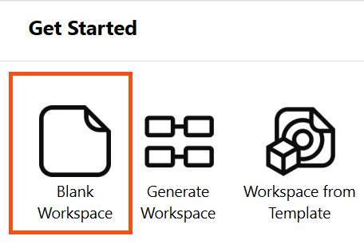
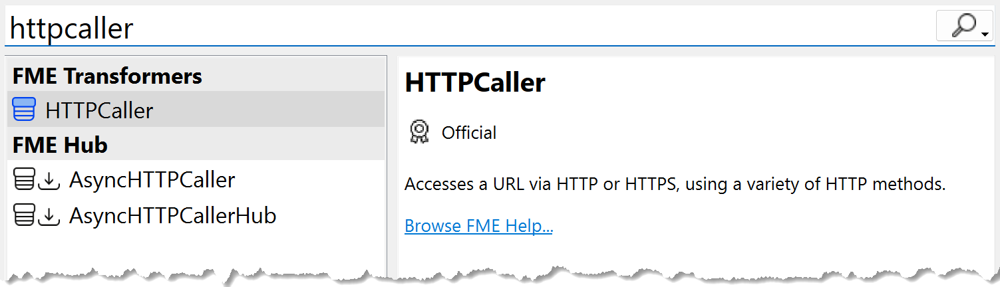
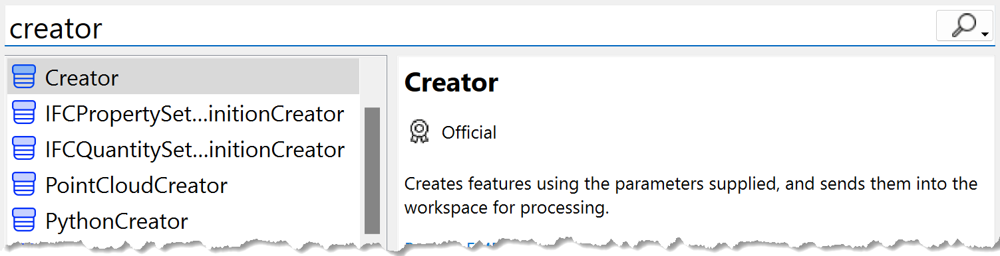
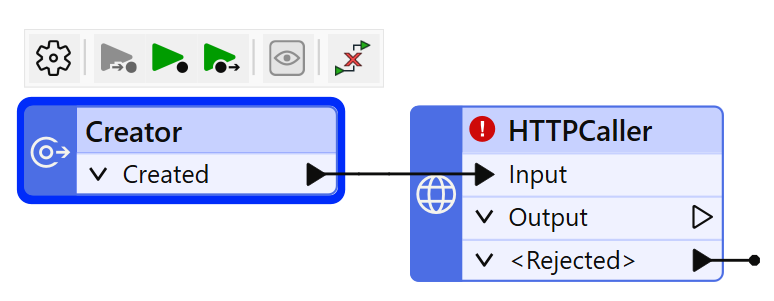
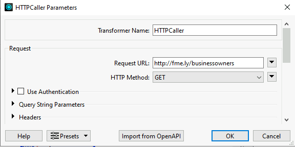
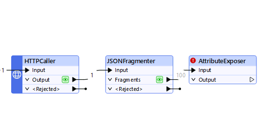
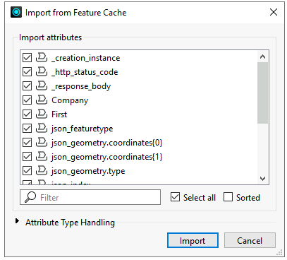

Learning Objectives
After completing this lesson, you’ll be able to:
- Define a transformer.
- Make HTTP calls using the HTTPCaller transformer.
- Turn a JSON response into features using the JSONFlattener transformer.

Learning content in the FME Academy presents a user's story addressing their data integration challenges with FME. You should follow along with their actions using your installation of FME (2024.0 or later) or request an on-demand virtual machine in the footer link below. Some lessons will require you to follow their steps or take additional steps to answer a quiz question.
The Resources section will provide links to interactive tutorials and starting workspaces when necessary.
Resources
- Complete workspace
- C:\FMEData\Workspaces\IntegrateDataWithTheFMEPlatform\read-web-data-complete.fmw
Read Web Data

Jennifer is a GIS Specialist working for a local government. She needs to read business license data from an API and write it to an Esri geodatabase, a widely used spatial database. The API is used internally, while the geodatabase is used in public-facing applications. Therefore, she wants to edit the attribute names and filter out some features with revoked business licenses in the final geodatabase to have appropriate data for displaying to the public.
In this section, we'll follow along with Jennifer to learn how to read web data and use transformers to change the content and structure of our data.
Jennifer is working with the same BusinessOwners dataset as Sven from the previous course, but she’s reading it from an API instead of an Excel spreadsheet.
In previous versions of this training, we taught Generate Workspace in this lesson. Generate Workspace is an alternative way to start building a workspace, where you define a reader and writer, and FME automatically generates a workspace for you. We've changed approaches and won't cover Generate Workspace. You can refer to the documentation if you'd like to learn how it works.
Jennifer starts FME Workbench (2024.0 or later) and clicks Blank Workspace in the Start tab.

Follow along with Jennifer's steps using your own version of FME.
Adding an HTTPCaller
So far, we've been using readers to read data.
However, in some case, you will read data using transformers.
A transformer is an FME Workbench object that carries out feature restructuring. There are hundreds of different transformers that perform different types of restructuring.
You can use transformers to change your data without writing code. If you prefer to write SQL or Python, you can use transformers like the SQLExecutor or PythonCaller.
⭐ New for FME 2023.1: you can now access AI Assist in compatible transformers to help you write regular expressions, SQL, or Python.
Transformers are primarily used to change data in some way, modifying its content or structure. However, some transformers can also read data.
Jennifer knows the standard way to make an API call using FME is with the HTTPCaller transformer. So she clicks on the blank canvas to ensure it's focused and then types HTTPCaller. As she begins to type, the Quick Add dialog appears.

She double-clicks HTTPCaller or presses Enter to add the transformer to the canvas.

She notices that the HTTPCaller requires an Input feature to work. What feature should she use?
Adding a Creator
If she wanted to make many API calls, she could send features into the Input port containing requests or query parameters to fill in while making the call. For example, maybe she would send features with a Request attribute with the following values:
https://my-api.com/v1/business-licenses?neighborhood=Downtown&page=1https://my-api.com/v1/business-licenses?neighborhood=Downtown&page=2https://my-api.com/v1/business-licenses?neighborhood=Downtown&page=3
Or she could send features with the query parameter values and use those in the HTTPCaller to construct each call:
| FeatureID |
Neighborhood |
Page |
| 19b16b26 |
Downtown |
1 |
| a43c3e7a |
Downtown |
2 |
| 66f88db0 |
Downtown |
3 |
However, in this case, she wants to make a single call and receive a JSON payload, and she already knows the URL in advance.
In this case, she must use a Creator transformer to make the call. The Creator transformer creates simple features. It's unusual in that it only has one output port. Jennifer can use it to make a single empty feature and use that to kick off the API call.
So, she keeps the HTTPCaller selected and uses Quick Add to add a Creator.

Because the HTTPCaller was selected, and FME knows the Creator only has an output port, it will correctly add it to the canvas already connected to the HTTPCaller's Input port:

Configuring the HTTPCaller
Now that the HTTPCaller has a feature going into Input, it will make one HTTP request. Jennifer double-clicks the HTTPCaller to open its parameters and configure them.
All transformers have parameters you can (or must, depending on the transformer) configure. How each is configured depends on the transformer, as they all do different things. To learn how to configure a transformer, check out the FME Help, accessible via the Help button at the bottom left of all transformer dialogs.
She enters http://fme.ly/businessowners for the Request URL and chooses GET for the HTTP Method.

If you are unfamiliar with HTTP requests, you can learn more here.
If you are more familiar with making HTTP requests using cURL, you can read about mapping cURL onto the HTTPCaller here.
We are "faking" an API request here for simplicity's sake. Usually, you'd make a request that included authentication and query parameters, all possible with the HTTPCaller. But to simplify this example, we'll GET a JSON payload directly.
You could also use a JSON reader, which would work fine. However, the HTTPCaller method is generally better when working with real API data.
Learn more about using APIs with FME.
⭐New for FME 2024.0: you can now directly import requests using an OpenAPI specification JSON or YAML file using the OpenAPICaller transformer.
She clicks OK to close the transformer parameters.
Testing the HTTPCaller
Jennifer knows it is vital to test transformers after configuring them. She runs the workspace after adding each transformer and inspects its feature cache to ensure the results look as expected. This technique lets her identify problems early on.
She clicks the Run button.
The Creator creates a single feature and sends it to the HTTPCaller. The HTTPCaller makes a single HTTP GET request to the request URL. It returns a JSON payload stored as a text attribute in the default attribute _response_body.
Visual Preview should automatically open to show the HTTPCaller's feature cache, but if it doesn't, click the cache icon on the HTTPCaller's Output port.

The results of the call are displayed in Visual Preview. Jennifer notices two things:

The JSON is stored in the _response_body attribute. Because it's quite a lot of text, an ellipsis button [. . .] is provided. Clicking that will open the entire text in a separate dialog.
Additionally, the HTTPCaller added an attribute called _http_status_code. This reports the HTTP status code, indicating the success of the call. A code of 200 indicates a successful call.
Attributes created by transformers use an underscore _ prefix to indicate that FME created them.
Jennifer clicks the ellipsis button [. . .] in the _response_body attribute. A dialog appears showing the full JSON payload.
She clicks the Syntax Highlighting button in the bottom-left of the dialog and chooses JSON to format the text as JSON:

Now, she can examine the response to understand its structure.
She can see it consists of an array of JSON objects, indicated by the opening and closing square braces [].
Each object has attribute-value pairs with a predictable schema. It also contains some geometry information.
{
"json_featuretype": "BusinessOwners",
"First": "Garth",
"Last Name": "Garrett",
"Company": "Hendrerit Consectetuer Cursus Industries",
"License Number": "8BCB7F",
"Longitude": -123.1006079306,
"Latitude": 49.24906160267,
"json_ogc_wkt_crs": "GEOGCS[\"WGS 84\",DATUM[\"WGS_1984\",SPHEROID[\"WGS 84\",6378137,298.257223563,AUTHORITY[\"EPSG\",\"7030\"]],AUTHORITY[\"EPSG\",\"6326\"]],PRIMEM[\"Greenwich\",0,AUTHORITY[\"EPSG\",\"8901\"]],UNIT[\"degree\",0.0174532925199433,AUTHORITY[\"EPSG\",\"9122\"]],AUTHORITY[\"EPSG\",\"4326\"]]",
"json_geometry": {
"type": "Point",
"coordinates": [
-123.1006079306,
49.2490616027
]
}
}
Schema (sometimes known as "data model") can be described as the structure of a dataset, or, more accurately, a formal definition of a dataset’s structure.
Learn more
This response matches her expectations. Her goal is to take these JSON attribute-value pairs and create FME features.
Jennifer closes the dialog.
Adding a JSONFragmenter
Jennifer selects her HTTPCaller and then uses Quick Add to add a JSONFragmenter transformer.

There are many transformers for manipulating JSON.
Learn more on the Knowledge Base.
She double-clicks the JSONFragmenter to open its parameters. She makes the following changes:
| Source > JSON Attribute |
_response_body |
| Flattening > Flatten Query Result into Attributes |
Yes |
With these settings, the JSONFragmenter will split each entry in the JSON array into an FME feature. Then, it will "flatten" the nested structure of JSON into the columnar structure of FME attributes.
However, if Jennifer only uses these settings, the resulting attributes will be unexposed; they will not appear in the Table view or be accessible within the workspace. This is because FME is designed to work with a fixed schema. It is not known in advance what names these attributes will have. We have to define that in the transformer.
Exposing attributes can be done with the Attributes to Expose parameter, but Jennifer can use the attributes stored in the feature cache if she uses an AttributeExposer transformer instead.
Jennifer clicks OK to close the JSONFragmenter parameters and then runs the workspace to create the cache on the JSONFragmenter. Then Jennifer adds an AttributeExposer transformer.

She double-clicks the AttributeExposer to open its parameters and then clicks on Import->From Feature Cache...

The Import button appears in many FME dialogs. It lets you import values from a dataset and can be helpful when you need to supply a list of:
- attribute names from an existing dataset
- feature type names from an existing dataset
- coordinate systems
- formats
An Import from Feature Cache dialog appears. By default, all the attributes found in the cache are selected for exposing.

Jennifer clicks Import and then OK to expose all of the added attributes.

Testing the JSONFragmenter
To see if she configured the transformer correctly, she clicks the Run button.
Notice how only the JSONFragmenter is highlighted in green when you mouse over the Run button. This highlighting indicates which parts of the workspace will run. When FME has feature caches, it will only run sections of the workspace that don't have caches yet.
The workspace runs, and then Visual Preview's Table view shows the results of the JSONFragmenter cache. It now has the attributes Jennifer wants:

You might have to scroll the Table view to the right to see all the new attributes.
Jennifer has successfully read the web data and extracted the attributes.
In the next lesson, she'll generate geometry from coordinates and write the data to a geodatabase.
Exercise
Follow along with Jennifer’s steps.